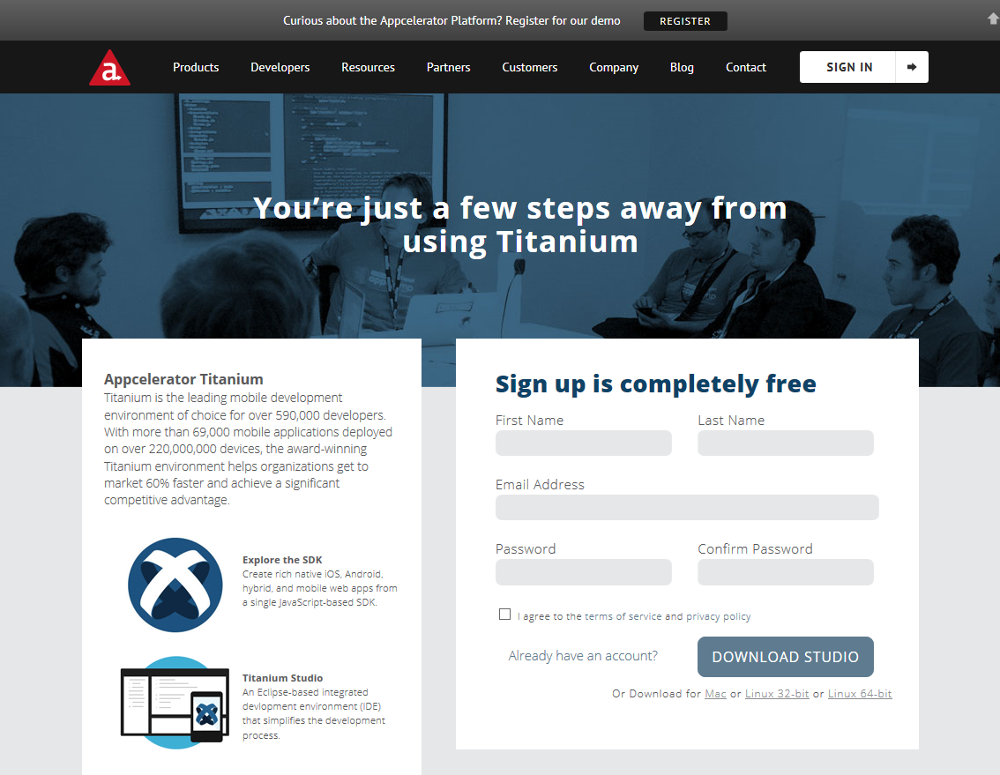
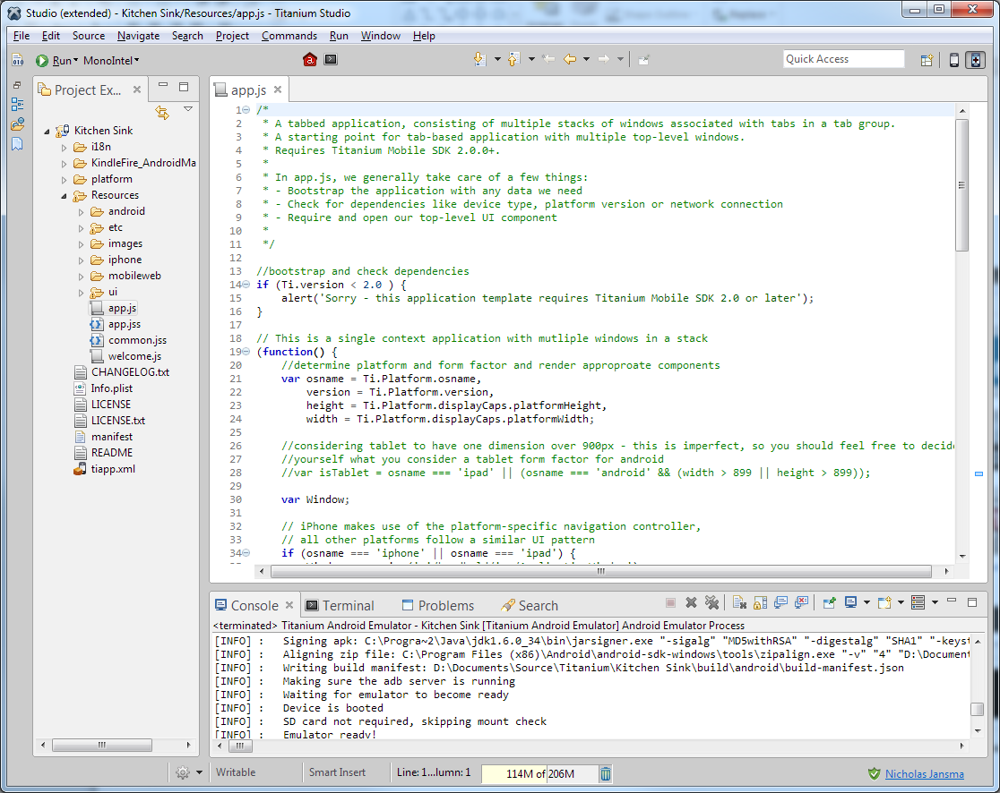
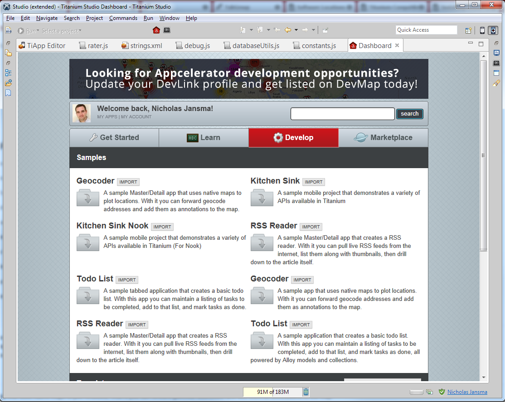
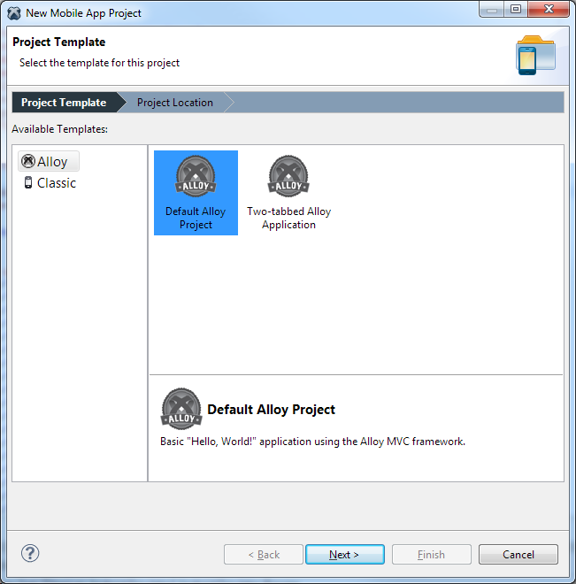

Nic Jansma | nicj.net | @NicJ
Ti.UI.createTextField()
creates a UITextView on iOS and a TextView on Android
https://my.appcelerator.com/auth/signup
The Developer account is free. You can build, test and deploy to the app stores with the free account.
There is an Enterprise plan that provides a SLA, analytics, more cloud, support, training and more.
Download Titanium Studio for free here:
http://www.appcelerator.com/titanium/download-titanium/
Works on Mac, Windows and Linux
(based on Eclipse)
Get the "Kitchen Sink" sample from Dashboard | Develop, which has code demos for how to use all of the controls:
Code samples for how to access all of the platform's native controls through the Titanium APIs (Ti.*)
File | New | Mobile App Project
Alloy will use their MVC framwork
Classic lets you build your own UI
i18n/: Internationalizationmodules/: Native modulesplatform/: iOS/Android specificResources: Core project code
app.js: Startup fileandroid/ and iphone/: Platform imageslib/, ui/, whatever/: Your code
var win = Ti.UI.createWindow({
title: 'Hello, World!',
layout: 'vertical',
backgroundColor: 'white'
});
var helloLabel = Ti.UI.createLabel({
text: 'Hello World',
color: 'black',
font: { fontSize: '20sp' },
height: '40dp',
width: '250dp'
});
win.add(helloLabel);
var helloButton = Ti.UI.createButton({
title: 'Click me!',
font: { fontSize: '20sp' },
top: '20dp',
height: '40dp',
width: '250dp'
});
helloButton.addEventListener('click', function() {
alert('you clicked me!');
});
win.add(helloButton);
win.open();
First, install Alloy via Node.js's NPM:
sudo npm install -g alloy
app/views/index.html:
<Alloy>
<Window class="container">
<Label id="label">Hello World</Label>
<Button id="button" onClick="doClick">Click me!</Button>
</Window>
</Alloy>
app/controllers/index.js:
function doClick(e) {
alert('you clicked me!');
}
$.index.open();
app/styles/index.tss:
".container": {
backgroundColor:"white"
},
"#label": {
top: 20,
width: Ti.UI.SIZE,
height: Ti.UI.SIZE,
color: "#000"
}
if(iOS){} and if(android){}